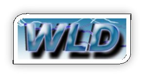
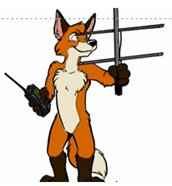
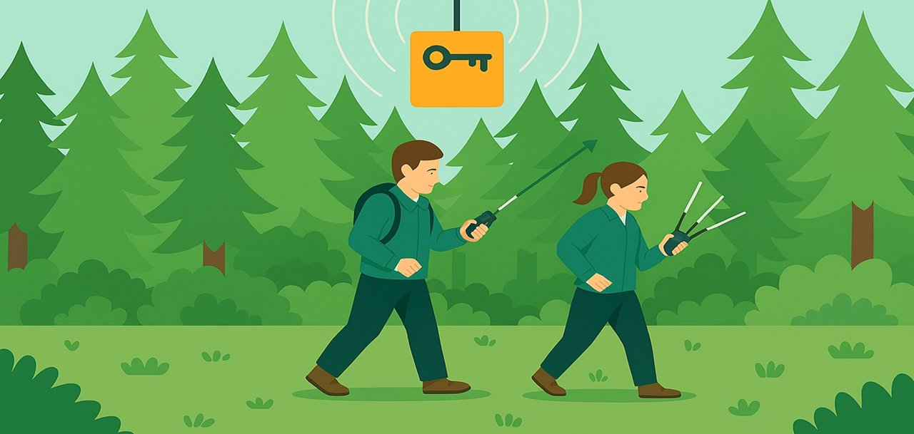
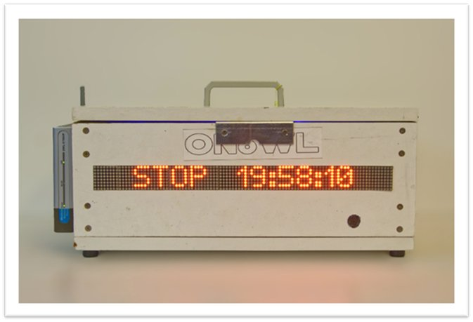

Welkom bij de WLD FoxWave ARDF Vossenjacht!
Jij bent uitgerust met een 80m CW receiver en een richtantenne.
Vijf radiobakens zijn verstopt in het park — elk zendt een unieke ARDF code uit:
MOE · MOI · MOS · MOH · MO5.
Gebruik je receiver om de richting te peilen, zet peilingen op de kaart en
vind alle 5 vossen. Keer daarna terug naar het WLD-tent om je tijd te registreren!
WLD Radio Amateur Club · 80m CW ARDF · Vossenjacht Simulator
Meld je aan bij het WLD-tent. De start/stop machine staat klaar.

Frequentie: 3.510 – 3.600 MHz · 80m band · CW (morse) · Max 25W
Bakens zenden: MOE · MOI · MOS · MOH · MO5 (standaard ARDF morse codes)
Keer terug naar het WLD-tent om te finishen!
Loop terug naar het gouden startpunt linksonder op de kaart.
De start/stop machine registreert je eindtijd automatisch.